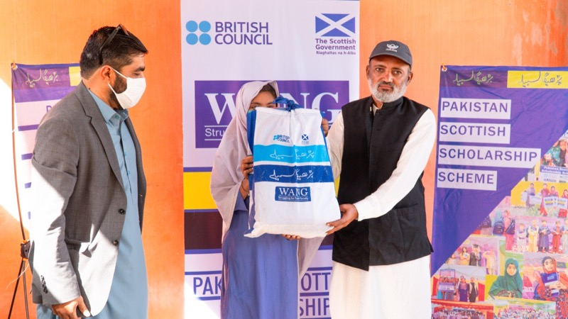

Arab News (Pakistan)
Coverage of WALI and rural innovation. Read at arabnews.pk

Institutional proof
WANG’s credibility comes from field execution and third-party validation. This page lists major awards, partnerships, and media references—each linked to an external or on-site source you can cite, share with donors, or verify in search.

International — CAREC
The CAREC Gender Climate Awards 2024 recognize organizations that advance gender equality in the face of climate adversity. Welfare Association for New Generation (WANG) is listed among winners in the Organization category—Pakistan—alongside peers from across the CAREC region.
National
WANG was recognized for outstanding social services and rural innovation impact at the KHI Awards 2025 ceremony in Karachi, selected from 166+ nominations nationwide alongside organizations like Shahid Afridi Foundation, Indus Hospital, and Saylani Welfare Trust. Covered by Daily Qaumi Awaz (Hub edition). Journal article · Media hub.
Partners & funders
Media & tech validation
Arab News (Pakistan)
Coverage of WALI and rural innovation. Read at arabnews.pk
ElevenLabs
Case study featuring WANG / Urdu AI voice and accessibility work. Read on elevenlabs.io
Aaj News — Pakistan–Scottish scholarship
National TV segment archived on WANG’s YouTube channel — Watch on YouTube.
More outlets and press notes: Media & documentation.
Founder recognition
Qaisar Roonjha — Prime Minister’s Youth Excellence Award (2022), presented by PM Shahbaz Sharif on International Youth Day; USAID Youth Activist of the Year; Rise Up Together Youth Champion (2019). Alumnus of Brandeis University, Heller School for Social Policy and Management. Team page.
Next step
Request updated logos, high-resolution photos, or a one-page PDF summary via Contact.